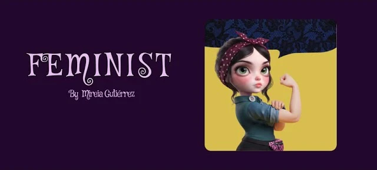

[DIBUJO PENDIENTE]
Una mujer cada día
Ejemplo de maqueta: así se vería la mujer del día, con su tarjeta y su ficha. Toca la tarjeta para girarla.
La tarjeta gira con un toque o con la tecla Intro.
Hipatia de Alejandría
Hipatia (355/370 - 415)
Astrónoma, matemática y filosofa - Alejandría (Egipto)
LOGRO:
Mejoró y construyó instrumentos astronómicos como el astrolabio o el planisferio.
¿Quién fue ?
Hipatia de Alejandría fue una brillante filósofa, matemática y astrónoma griega que vivió en Egipto a finales del siglo IV y principios del V. Es la primera mujer matemática de la que se conserva un registro biográfico e histórico detallado, además destacó por sus profundos conocimientos en geometría, álgebra y astronomía. Su figura se convirtió en un símbolo universal de la razón, el libre pensamiento y la erudición. Su trágica muerte, a manos de una multitud de cristianos extremistas que atacaban la ciencia y el paganismo clásico, la consagró definitivamente como un icono histórico de la defensa del conocimiento y la libertad intelectual. Para algunos historiadores su muerte supuso el principio del fin del paganismo en la Antigüedad.
Mujeres de la historia
[DIBUJO PENDIENTE]
Ada Lovelace
[DIBUJO PENDIENTE]
Rosa Parks
[DIBUJO PENDIENTE]
Frida Kahlo
[DIBUJO PENDIENTE]
Hedy Lamarr
[DIBUJO PENDIENTE]
Emma Goldman

El juego Feminist
Un videojuego reivindicativo y feminista, cargado de acción, humor y lucha, en el que las grandes mujeres de la historia te apoyan en tu camino.
Actividades
Cada actividad completada te da un sello, que se guarda en tu navegador.
- Memory
- Línea del tiempo
- La mujer en el mundo
- ¿De quién es la frase?
- Pancarta 8M
- Inventos de mujeres
Glosario feminista
Palabras que conviene conocer.
- sororidad
- techo de cristal
- brecha salarial
- micromachismo
Hecha por una mujer en la informática
Esta web y el juego los ha hecho una mujer, en un sector donde las mujeres son una clara minoría. Mireia pasó de la educación a la informática, un trabajo que en su momento ni se había planteado.